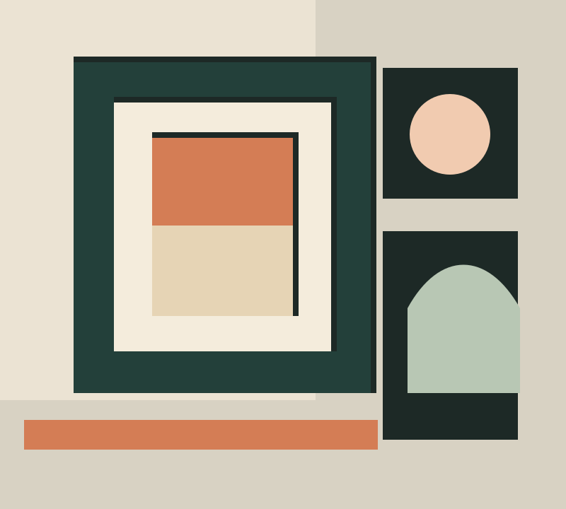

01 — KURATIEREN
Ausstellungen gestalten.
Konzeption und kuratorische Arbeit für Ausstellungen im Bereich der bildenden Kunst.
Kunst · Archive · Ausstellungen
Michael Hiltbrunner kuratiert Ausstellungen, erschliesst Kunstarchive und entwickelt Publikationen sowie Online-Archive. Für Projekte, die Wissen sichtbar und weiterführbar machen.

Leistungen
Von der ersten Recherche bis zur öffentlichen Vermittlung verbindet die Arbeit kuratorische Perspektive, Archivwissen und editorisches Denken.
01 — KURATIEREN
Konzeption und kuratorische Arbeit für Ausstellungen im Bereich der bildenden Kunst.
02 — ARCHIVE
Kunstarchive bestimmen, erschliessen und für Forschung sowie Vermittlung zugänglich machen.
03 — PUBLIKATIONEN
Publikationen und Online-Archive entwickeln, die künstlerische Arbeit und ihre Kontexte nachvollziehbar machen.
Arbeitsweise
Kunstwerke, Dokumente und Geschichten entfalten ihre Wirkung, wenn ihre Zusammenhänge klar werden. Die Arbeit verbindet Recherche, Struktur und eine verständliche Vermittlung.
Profil
Michael Hiltbrunner arbeitet als unabhängiger Kurator und ist in Zürich tätig. Sein Hintergrund verbindet Kunsttheorie, Kulturanthropologie und die Arbeit mit Archiven.
Zu seiner Praxis gehören kuratorische Projekte, die Erschliessung von Kunstarchiven sowie Publikationen und Web-Plattformen im Umfeld der zeitgenössischen Kunst.
Kontakt
Sie möchten eine Ausstellung, ein Archivprojekt, eine Publikation oder ein Online-Archiv besprechen? Michael Hiltbrunner freut sich über Ihre Nachricht.
Michael Hiltbrunner
Kurator · Archivar